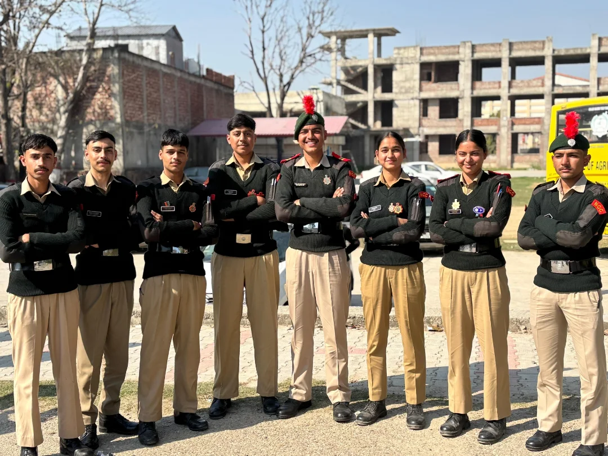

Flagship Events
Major Camps
FLAGSHIP CAMP
Republic Day Camp (RDC) – New Delhi
The most prestigious NCC camp, held annually in New Delhi ahead of Republic Day. Selected cadets from our unit march at Kartavya Path — the ultimate honour for any cadet.
12+RDC Selections
3Prime Minister's Rallies
2024Last Selection


ARMY WING
Thal Sainik Camp (TSC)
An intensive military-themed inter-group competition testing cadets on drill, weapon training, map reading, field craft, and physical fitness.
8+TSC Participations
GoldBest Company Award